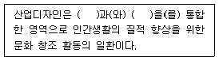
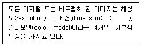
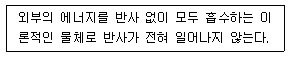
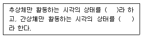
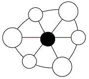
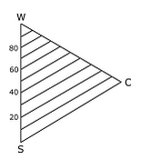

컬러리스트기사 (2006-08-06 기출문제)
1과목: 색채심리 마케팅
1. 색채 마케팅에 관한 설명으로 부적당한 것은?
- 색채를 이용하여 소비자의 심리에 영향을 주는 것이다.
- 잘 팔리는 색과 팔리지 않는 색을 말하는 것이다.
- 라이프 스타일에 따른 선호보다 유행색을 중심으로 제품을 개발하는 것이다.
- 국가별, 지역별 색채감성을 파악하는 것이 필요하다.
(정답률: 알수없음)

2. 운송수단의 색채설계에 관한 설명 중 배색조건과 거리가 먼 것은?
- 항상성과 안전성
- 계절의 조화
- 쾌적과 안정감
- 환경의 조화
(정답률: 알수없음)
3. 다음 중 학교의 일반적인 색채계획으로 거리가 먼 것은?
- 각국, 설비물, 벽은 30 ~ 40%의 반사율을 가지는 것이 적절하다.
- 교실의 옆 벽, 후면 벽은 중간색조의 짙은 갈색계, 감청색이 좋다.
- 간이식당은 복숭아색, 산호색이 좋다.
- 도서실은 콜로니얼 그린, 펄 그레이 색조가 좋다.
(정답률: 알수없음)
4. 화장품 회사에서 색조화장품 개발을 위한 조사방법으로 적절하지 않은 것은?
- 개발하려는 신제품 개념에 대한 명료화
- 제품 소비자의 연령 및 사회 문화적 배경에 대한 탐색
- 조사자의 편의에 의한 표본 집단의 선정
- 제품 소비자 모집단에 대한 명확한 이해
(정답률: 알수없음)
5. 색채 시장조사 방법 중 개별 면접조사에 대한 설명으로 틀린 것은?
- 개별 면접조사에서는 심층적이고 복잡한 정보의 수집이 가능하다.
- 개별 면접조사는 조사자와 참여자 간의 관계 형성이 쉽다.
- 개별 면접조사가 전화 면접조사보다 신뢰성이 높다.
- 개별 면접조사는 조사비용과 시간이 적게 들고 조사원의 선발에 대한 부담이 없다.
(정답률: 알수없음)
6. 소비자가 구매 후 자신의 선택에 대하여 불안감을 느끼는 것은?
- 상표 충성도
- 인지 부조화
- 내적 탐색
- 외적 탐색
(정답률: 알수없음)
7. 다음의 색채 적용 사례 중 사용자의 안전을 고려한 색채 적용사례로 가장 적절한 것은?
- 가전제품의 전원 버튼을 다른 버튼과 동일한 색으로 적용하였다.
- 차가운 음식은 흰색 포장지로 싸고, 뜨거운 음식은 빨간색 포장지로 싸고 경고문을 붙였다.
- 조립식 의자의 부속들 중 함께 조립해야 하는 부분에 서로 다른 색을 적용하였다.
- 각기 다른 곳에 연결될 전선의 색을 똑같이 한 가지 색으로 통일하였다.
(정답률: 알수없음)
8. 색채 마케팅에 있어서 기업 C.I.의 주조색을 선정하는 경우 고려해야 할 점은?
- 색에 의한 이미지 변화를 분석한 후 기업이 지향하는 비즈니스 방향과 목적에 부합되는지를 분석하여야 한다.
- 명도가 높은 경우 이미지를 만들기 어려우므로 명도가 너무 높지 않은 것으로 고려해야한다.
- 일반적으로 기업이 가지는 색채는 채도가 높은 순색을 사용할 경우 매출에 긍정적인 영향을 보였으므로 채도가 높은 순색을 선택하여야한다.
- 기업 이미지 색채는 다양할수록 이미지 만들기가 용이하므로 5색 이상의 색조화를 제안하여야 한다.
(정답률: 알수없음)
9. 고객으로 하여금 기업의 우수성이나 사회적인 신뢰도 등을 알리는 광고로서 이미지 구축을 위한 광고의 형태는?
- 상품광고
- 기업광고
- 홍보광고
- 대중광고
(정답률: 알수없음)
10. <따뜻한 - 차가운>, <밝은 - 어두운>, <약한 - 강한> 등의 반대적인 의미를 단계적으로 정도 차이를 표기할 수 있도록 조사하는 방법은?
- GT법
- 오스왈드법
- ISCC법
- SD법
(정답률: 알수없음)
11. 일반적으로 교감신경의 긴장을 높이고 성호르몬의 활동을 억제하는 작용을 하는 색채로서 명상과 사고를 요하는 부분에 사용되는 색채는?
- 파랑
- 노랑
- 주황
- 빨강
(정답률: 알수없음)
12. 기업이 적극적인 마케팅 믹스로 활용할 수 있는 가장 기본적인 요소인 4P에 해당하지 않는 것은?
- 제품(Product)
- 위치(Positioning)
- 판매촉진(Promotion)
- 유통구조(Place)
(정답률: 알수없음)
13. 어떤 조명광이나 물체색을 오랫동안 보면 그 색에 순응되어 색의 지각이 약해지는 현상은?
- 잔상색
- 동화작용
- 후퇴색
- 색순응
(정답률: 알수없음)
14. 색채기호나 선호도 조사시 색채도구를 활용하는 경우 조사업무를 수행하는 조사자의 관리에 대한 내용으로 잘못된 것은?
- 색채에 대한 정신적, 물리학적, 심리학적 이해를 갖게 하는 것이 필요하다.
- 색채체계(먼셀, NCS 등)에 관한 교육이 필요하다.
- 색채의 3속성을 고려하여 색채공간에서의 정확한 색채위치를 찾을 수 있는 훈련이 필요하다.
- 조사원의 편차를 줄이기 위하여 소수의 조사원으로 제한한다.
(정답률: 알수없음)
15. 색채 시장조사 방법 중 설문작성방법으로 적절한 것은?
- 개인의 신분을 나타내는 인구사회학적 질문은 가능하면 설문지의 첫머리에 배치하는 것이 좋다.
- 설문의 구성은 내용과 관련된 구체적인 질문에서 전반적인 질문으로 배치한다.
- 각각의 질문에는 하나 이상의 내용을 구체화하고, 응답자에게 특정 대답을 유도하는 질문을 한다.
- 각 질문은 문법적으로 정확한 어휘를 사용하고 전문적인 용어는 피하는 것이 좋다.
(정답률: 알수없음)
16. 다음 중 특정 상품에 대한 브랜드 충성도가 매우 강한 소비자 집단은?
- 관습적 소비자 집단
- 감정적 소비자 집단
- 유동적 소비자 집단
- 신소비자 집단
(정답률: 알수없음)
17. 현재는 특정욕구를 충족시켜주는 동일 카테고리의 타 제품을 사용하고 있지만 잘 관리하면 자가제품으로 전환이 가능한 구매자 그룹군은?
- 잠재적 구매자
- 연령별 구매자
- 시장세분화 구매자
- 고정 구매자
(정답률: 알수없음)
18. 색채의 상징으로 잘못된 것은?
- 운동복, 경기장 배경 등 스포츠에서의 색채의 사용은 정보체계로서의 역할을 한다.
- 흰색은 서양에서는 순결을 상징하나, 동양에서는 장례식을 상징한다.
- 고대건축에서 색채는 장식적으로 사용되었으나 중세에 이르러서는 상징적으로 사용되었다.
- 교통 및 공공시설물에 사용되는 안전을 위한 표준색은 국제언어로서 활용된다.
(정답률: 알수없음)
19. 다음 중 제품정보로서의 색과 관련된 색채연상효과에 관한 설명으로 거리가 먼 것은?
- 바나나 우유의 포장 용기를 노란색으로 채색하였다.
- 청량음료 용기에는 한색과 흰색의 조합에 의한 배색이 주로 사용된다.
- 가전제품의 경우 전원과 메뉴 선택 버튼을 시각적으로 쉽게 인지되고 사용이 편리하게 색채를 적용한다.
- 전투복의 색상은 주위 환경에 위장이 용이한 색채로 디자인 한다.
(정답률: 알수없음)
20. 시장세분화의 이점이 아닌 것은?
- 시장기회를 보다 쉽게 찾아 낼 수 있다.
- 마케팅 믹스를 보다 효과적으로 조합할 수 있다.
- 동질적인 시장에서 생산량을 확대할 수 있는 마케팅 기법이다.
- 시장수요의 변화에 보다 신속하게 대처할 수 있다.
(정답률: 알수없음)
2과목: 색채디자인
21. 아이디어 발상에 많이 활용되는 창조기법 중 문제를 응시하는 입장을 바꿔 공통의 유사점이나 관련성을 찾아내고 동시에 새로운 사고방법으로 2개의 것을 1개로 조립하는 것을 목표로 하는 것은?
- 시네틱스(Synetics)
- 투입-산출 분석(Input-Output Analysis)
- 형태분석법(Morphological Analysis)
- 브레인스토밍(Brainstorming)
(정답률: 알수없음)
22. 다음의 각 사조에 사용된 색채에 다한 설명 중 맞는 것은?
- 아르누보 - 환하고 연한 파스텔 계통의 부드러운 색조 및 섬세한 분위기 연출
- 다다이즘 - 어둡고 무거운 톤의 색채가 주가 됨
- 드 스틸 - 낡은 듯한 느낌의 어둡고 칙칙한 색조 및 무채색의 사용
- 미래주의 - 검정, 하양, 빨강, 노랑, 파랑 등의 강한 원색 대비를 이용
(정답률: 알수없음)
23. 사회 캠페인 매체로서 목적하는 바에 따라 대중을 설득하거나 통일된 행동을 유도하는 포스터는?
- 관광 포스터
- 문화행사 포스터
- 공공 캠페인 포스터
- 상품광고 포스터
(정답률: 알수없음)
24. 형태를 이념적 형태와 현실적 형태로 구분할 때, 다음 중 현실적인 형태에 해당하는 것은?
- 점
- 선
- 면
- 사각기둥
(정답률: 알수없음)
25. 일러스트레이션에 대한 설명으로 잘못된 것은?
- 출판, 광고와 같은 인쇄매체를 통해 어떤 목적이나 내용을 효과적으로 전달하기 위한 그림이다.
- 사실주의와 초현실주의의 기법이 활용되고 있다.
- 타이포그래피도 일러스트레이션의 한 영역이다.
- 일러스트레이션을 통해 그 사회의 단면을 파악할 수 있다.
(정답률: 알수없음)
26. 그리스어인 rheo(흐르다)dptj 나온 말로, 유사한 요소가 반복 배열되어 연속할 때 생겨나는 것으로서 음악, 무용, 영화 등의 예술에서도 중요한 원리가 되는 것은?
- 균형
- 리듬
- 강조
- 조화
(정답률: 알수없음)
27. 다음 중 입체에 대한 설명이 아닌 것은?
- 면이 이동한 자취이다.
- 공간, 표면, 방위, 위치 등의 특징을 가진다.
- 두 면과 각도를 가진 방향으로 이동 또는 면의 회전에 의해서 생긴다.
- 넓이는 있지만 두께는 없고, 원근감과 질감을 표현할 수 있다.
(정답률: 알수없음)
28. 다음 중 세계화와 지역화가 강하게 대두되면서 중요한 디자인 요소로 비중이 높아가고 있는 것은?
- 질서성
- 합리성
- 문화성
- 심미성
(정답률: 알수없음)
29. 러시아를 중심으로 하는 아방가르드 운동의 하나로 현대의 기술적 원리에 따라 실제 산물을 생산하는 것을 목표로 한 조형운동은?
- 기능주의
- 구성주의
- 모던디자인
- 바우하우스
(정답률: 알수없음)
30. 다음 중 착시와 관련된 설명으로 잘못된 것은?
- 숫자 8은 균형을 맞추기 위해 아래 부분을 조금 크게 만든다.
- 같은 길이의 선일 때 수직선은 수평선보다 더 짧아 보인다.
- 같은 크기일 때, 흰색 제품보다 검은색 제품이 더 작아보인다.
- 길이의 착시, 면적과 크기의 착시, 방향의 착시 등이 있다.
(정답률: 알수없음)
31. 다음 중 디자인(Design)이라는 용어의 어원으로 볼 수 없는 것은?
- drawing
- dessin
- disegno
- desingare
(정답률: 알수없음)
32. 색채계획에서 기업색채의 선택 요점 중 잘못된 것은?
- 기업 이념과 실체에 맞는 이상적 이미지를 나타내는 색
- 타사와의 차별성을 두지 않는 색
- 다양한 소재의 적용이 용이하고 관리하기 쉬운 색
- 사람에세 불쾌감을 주지 않고, 주위와 조화되는 색
(정답률: 알수없음)
33. 1960년대 후반부터 미국에서 현저하게 나타난 동향으로 단순한 기하학적 형태를 사용하여 이미지와 조형요소를 최소화하여 기본적인 구조로 환원시키고 단순함을 강조한 것은?
- 팝아트
- 옵아트
- 미니멀리즘
- 포스트 모더니즘
(정답률: 알수없음)
34. 수공예적 공예생산인 미술공예운동의 기수가 된 사람은?
- 발터 그로피우스
- 헤르만 무지테우스
- 요하네스 이텐
- 윌리엄 모리스
(정답률: 알수없음)
35. 다음 중 자연계의 생물학적 원형들이 지니는 기본 생존 방식을 인공물의 디자인이나 인위적 환경 형성에 이용하는 디자인을 의미하는 것은?
- 바니오닉 디자인
- 산업디자인
- 하이테크 디자인
- 토탈 디자인
(정답률: 알수없음)
36. 국제 유행색 협회(International Comission for Fashion and Textile Colors)에 대한 설명이 잘못된 것은?
- 1963년 설립되었다.
- 3년 후의 색채 방향을 분석하고 제안한다.
- 봄/여름, 가을/겨울의 두 분기로 유행색을 예측 제안한다.
- 매년 1월과 7월말에 협의회를 개최한다.
(정답률: 알수없음)
37. 의상 디자인의 발달과정에서 시대별로 나타난 색채사용의 특성 중 타당하지 않은 것은?
- 1900년대에는 아르누보의 부드럽고 여성적인 경향을 보이는 파스텔 색조가 유행하였다.
- 1940년대 초반에는 2차 세계대전의 영향으로 검정, 카키, 올리브의 군복의 색조가 즐겨 사용되었다.
- 1950년대는 팝아트의 영향으로 블루진과 자연의 색조인 파랑, 녹색이 유행하였다.
- 1980년대에는 재패니스 룩(Japanese Look), 앤드로지너스 룩(Androgynous look)으로 검정, 흰색과 어두운 자연계 색이 유행하였다.
(정답률: 알수없음)
38. 디자인의 기본 조건인 합목적성에 대한 설명은?
- 시대성, 유행, 개성이 복합된 것이다.
- 기능성과 실용성을 고려한 것이다.
- 사용될 재료, 가공법을 고려한 것이다.
- 창의적인 아름다움을 창조하는 것이다.
(정답률: 알수없음)
39. 다음의 ( )안에 알맞은 것은?

- 생산, 유통
- 자연물, 인공물
- 과학기술, 예술
- 평면, 입체
(정답률: 알수없음)
40. 환경디자인의 영역과 거리가 먼 것은?
- 자연보호 포스터
- 도시계획
- 조경 디자인
- 실내 디자인
(정답률: 알수없음)
3과목: 색채관리
41. 모니터나 프린터 등과 같이 색역이 다른 매체를 통하여 영상의 색채를 일치시키고자 할 때, 즉 자연물의 사진이나 모니터의 화면을 컬러프린터로 출력하고자 할 때 색채를 일치시키는 컬러매칭 방법으로 가장 바람직한 것은?
- 분광학적인 방법
- 측색에 근거한 방법
- 컬러 어피어런스에 의한 방법
- 색료의 일치에 의한 방법
(정답률: 알수없음)
42. 디지털 컴퓨터 시스템에 의한 색채의 혼합에서 디바이스 종속 CMY 색체계 공간에서 마젠타는(0,1,0), 시안은(1,0,0), 노랑은 (0,0,1) 이라고 할 때, (1,0,1) 이 나타내는 색은?
- 빨강(red)
- 파랑(blue)
- 녹색(green)
- 검정(black)
(정답률: 알수없음)
43. 다음 색에 관한 용어 중 상이한 빛이 비교적 작은 주기로 눈에 들어오는 경우 정상적인 자극으로 느껴지지 않는 현상을 말하는 것은?
- 크로미넌스
- 푸르킨예 현상
- 플리커
- 크로매틱니스
(정답률: 알수없음)
44. 다음 중 염료와 안료를 구분하는 일반적인 기준으로 가장 적합하지 못한 것은?
- 일반적으로 염료는 수용성, 안료는 비수용성이다.
- 염료는 수지(resin) 내부로 용해되어 투명한 혼합물이 되고, 안료는 수지에 용해되지 않고 빛을 산란시킨다.
- 안료는 고착제(binder)가 필요하고 염료는 고착제가 필요 없다.
- 염료는 무기성, 안료는 유기성 화합물이 대부분이다.
(정답률: 알수없음)
45. 육안 조색시 발생할 수 있는 메타메리즘으로 인한 이색을 방지하기 위해서 취해야 할 사항으로 옳은 것은?
- 믹서로 섞여진 도료를 완전히 섞어준 후 태양광하에서만 조색해야 한다.
- 결과의 검사는 반드시 3인 이하로 제한한다.
- 육안조색이므로 도료를 믹스로 섞어서는 안되며, 어플리케이터를 활용해 샘플색을 가능한 두껍게 칠한다.
- 표준광원이 필요하며 기준 조색 광원을 명기한다.
(정답률: 알수없음)
46. 스캐너와 디지털 카메라의 특성화 과정에서 ‘입력, 조정, 출력시 서로 기준을 조정해 주는 샘플 컬러 패치(patch)로서 국제표준기구(ISO)가 지정한 것은?
- CIL 차트
- IT8 차트
- CMYK 차트
- CCT 차트
(정답률: 알수없음)
47. 육안으로 색을 비교할 때의 주의사항이다. 틀린 것은?
- 관찰자는 선명한 색이 옷을 피해야 한다.
- 여러 색채를 검사하는 경우 계속 검사를 피한다.
- 초록색을 비교한 경우 노란색을 바로 비교해서는 안된다.
- 높은 채도의 색을 검사한 다음 낮은 채도의 색을 검사한다.
(정답률: 알수없음)
48. 다음은 색에 관한 용어의 설명이다. 틀린 것은?
- 휘도순응 : 시각계가 시야의 휘도에 순응하는 과정 또는 순응한 상태
- 명순응 : 3cd ㆍ m-2 정도 이상인 휘도의 자극에 대한 휘도순응
- 명소시 : 명순응 상태에서 시각계가 시야의 색에 순응하는 과정 또는 순응된 상태
- 암순응 : 0.03cd ㆍ m-2 정도 이하인 휘도의 자극에 대한 휘도순응
(정답률: 알수없음)
49. 다음 중 컴퓨터 자동배색(CCM)의 특징이 아닌 것은?
- 광원이 바뀌어도 색채가 일치함
- 사용되는 색료량을 정확하게 지정할 수 있음
- 발색에 소요되는 비용을 정확히 산출할 수 있음
- 자동배색 과정 중에 혼입되는 각종 요인에서도 색채가 변하지 않음
(정답률: 알수없음)
50. 다음 중 CIE L*a*b* 색표계에서 a* 에 해당되는 색의 영역으로 가장 옳은 것은 ?
- red ~ blue
- yellow ~ blue
- green ~ red
- red ~ yellow
(정답률: 알수없음)
51. 다음 ( ) 안에 들어 갈 용어로 가장 적합한 것은?

- 비트 깊이(depth)
- 색상과 명도(hue and lightness)
- 무아레(moire)
- 픽셀과 레지스터(pixel and register)
(정답률: 알수없음)
52. 광원에 따라 물체의 색이 달라지는 광원의 특성을 무엇이라고 하는가?
- 포화도
- 방사휘도율
- 시인성
- 연색성
(정답률: 알수없음)
53. 간접인쇄방식으로 수분과 기름의 반발작용에 의해 잉크가 판에서 고무블랭킷으로, 고무블랭킷에서 종이로 옮겨지는 인쇄방법은?
- 그라비어 인쇄
- 볼록판 인쇄
- 스크린 인쇄
- 오프셋 인쇄
(정답률: 알수없음)
54. 다음에서 설명하는 것은 무엇인가?

- 백체
- 흑체
- 색체
- 추상체
(정답률: 알수없음)
55. 색채측정기에 대한 설명 중 잘못된 것은?
- 필터식 색채계는 색필터와 광검출기 등을 이용하여 삼자극치를 직접 측정한다.
- 분광식 색채계는 인간의 삼자극효율함수와 기준광원의 분광강도 분포를 사용하여 값을 산출한다.
- 색채측정 장치는 시료대, 광검출기, 전산장치로 구분할 수 있다.
- 분광식 색채계는 측정이 간편하여 현장에서의 색채관리나 이동형 색채계로 많이 활용된다.
(정답률: 알수없음)
56. 안료(Pigment)에 대한 설명으로 옳지 않은 것은?
- 무기안료와 유기안료로 구분되며, 채색 후에 물이나 습기에 노출되더라도 색이 잘기 보존되어야 한다.
- 합성안료는 안료 입자의 크기가 클수록 전체 표면적이 커져서 빛은 더 잘 반사하는 반면 산란은 일어나지 않는다.
- 원시인이 사용한 안료는 산화철, 산화망간, 목탄 등이다.
- 안료를 이용하여 채색하는 예로는 자동차의 내장 및 외장의 표면 코팅, 유성 및 수성 페인트 등이다.
(정답률: 알수없음)
57. 육안검색시의 유의사항에 대한 설명이다. 틀린 것은?
- 비교하는 색의 면적이 같아지도록 마스크를 사용한다.
- 환경색에 영향을 받지 않아야 한다.
- 가능하면 마스크는 비교하는 색의 채도에 가깝게 해야 한다.
- 비교하는 색을 인접해서 배열하되, 동일 평면으로 배열한다.
(정답률: 알수없음)
58. 다음 중에서 육안 조색시 가장 적절한 조도는?
- 약 1,000 Lux
- 약 700 Lux
- 약 500 Lux
- 약 300 Lux
(정답률: 알수없음)
59. 전하결합소자라고 하며, 색채영상의 입력기인 디지털 카메라, 스캐너 등의 가장 기본이 되는 구성 요소는?
- CCD (Charge Coupled Device)
- 픽셀 (Pixel)
- CAE (Computer Aided Engineering)
- 메모리 카드 (Memory Card)
(정답률: 알수없음)
60. 빛에 대한 설명으로 틀린 것은?
- 빛은 시각계에 생기는 밝기 및 색의 지각, 감각으로 보통 시각계에 대한 광자극의 작용에 따라 생긴다.
- 눈에 들어와 시감각을 일으킬 수 있는 방사로서 가시방사라고도 한다.
- 빛의 파장은 통과하는 물질에 관계없이 일정하다.
- 자외방사로부터 적외방사까지의 파장 범위에 있는 방사도 포함된다.
(정답률: 알수없음)
4과목: 색채지각론
61. 다음 중 벽지의 색을 작은 견본에서 선택할 때 가장 적절한 것은?
- 원하는 색 그대로의 견본을 고른다.
- 원하는 색보다 조금 밝고 진한 색의 견본을 고른다.
- 원하는 색에 녹색 기미가 더해진 색의 견본을 고른다.
- 원하는 색보다 조금 어둡고 채도가 낮은 색의 견본을 고른다.
(정답률: 알수없음)
62. 다음 중 고층 아파트 건물의 외벽 색채를 선택하는데 있어서 유의해야할 점에 대한 설명 중 틀린 것은?
- 작은 샘플의 색채보다 실제로 칠해진 색채는 더욱 밝게 보인다.
- 실제로 칠해진 작은 샘플의 색채보다 훨씬 제채도로 느껴진다.
- 면적대비의 원리가 적용된다.
- 아파트 주변환경에 따라 명도나 채도 모두 다르게 느껴질 수 있다.
(정답률: 알수없음)
63. 다음 ( ) 안에 알맞은 용어를 순서대로 나열한 것은?

- 주간시, 야간시
- 주간시, 착시
- 야간시, 주간시
- 여간시, 착시
(정답률: 알수없음)
64. 다음 중 채도대비에 관한 설명으로 잘못된 것은?
- 채도가 다른 두 색을 인접시켰을 때 서로의 영향으로 채도가 높거나 낮아 보이는 현상이다.
- 순색은 채도가 높은 바탕보다는 채도가 낮은 바탕에서 더 선명해 보인다.
- 채도 대비는 인접한 두 색의 채도 차이가 클수록 뚜렷하게 나타난다.
- 채도대비는 유채색과 유채색 간에 가장 뚜렷하게 느낄 수 있다.
(정답률: 알수없음)
65. 연변대비를 감쇄시키고자 할 때 사용하는 방법으로 가장 좋은 것은?
- 색상대비를 더 크게 한다.
- 두 색 사이에 각각 보색의 테두리를 두른다.
- 두 색 사이에 채도가 높은 색의 테두리를 두른다.
- 두 색 사이에 무채색의 테두리를 두른다.
(정답률: 알수없음)
66. 색채지각 반응효과에서 명시성(legibility)에 가장 크게 영향을 미치는 속성은?
- 채도의 차이
- 명도의 차이
- 질감의 차이
- 색상의 차이
(정답률: 알수없음)
67. 다음 중 가법혼색에 대한 설명으로 틀린 것은?
- C.I.E. 표색계는 3색의 자극으로 혼합비율을 일정한 규정으로 정하는 가법혼색의 원리를 적용하고 있다.
- 가법혼색은 혼색할 수록 명도가 높아진다.
- 색광의 3원색 중 red와 blue의 동등한 혼합은 violet이다.
- 가법혼색은 영 ㆍ 헬름홀쯔에 의한 삼원색성에 입각한 것이다.
(정답률: 알수없음)
68. 색의 중량감에 대한 설명 중 틀린 것은?
- 검정색이 칠해진 것은 무거워 보인다.
- 흰색이 칠해진 것은 가벼워 보인다.
- 고명도의 난색 계열은 가벼운 느낌을 준다.
- 유채색에서는 중량감의 차이가 없다.
(정답률: 알수없음)
69. 가시광선의 스펙트럼에 관한 내용으로 맞는 것은?
- 빛의 직진 현상을 이용한 것이다.
- 파장에 따라 굴절룰이 다르기 때문에 나타난다.
- 빛의 분광으로 나타난 색들은 간격이 동일하다.
- 스펙트럼의 색을 빨강, 주황, 노랑 등 7색으로 주장한 것은 호이겐스 이다.
(정답률: 알수없음)
70. 다음 중 가장 작아 보이는 색은?
- 채도가 높은 주황색
- 밝은 노랑색
- 명도가 낮은 파랑색
- 채도가 높은 연두색
(정답률: 알수없음)
71. 때로는 차갑게, 때로는 따뜻하게 느껴질 수 있는 색을 중성색이라고 한다. 다음 중 중성색이 아닌 것은?
- 녹색
- 보라
- 자주
- 주황
(정답률: 알수없음)
72. 명소시에서 암소시로 이동할 때 일어나는 색 지각현상으로 파랑 쪽의 비시감도가 노랑이나 빨강 쪽의 스펙트럼에 비해 높아지는 현상은?
- 베졸드 현상
- 비렌 현상
- 페흐너 현상
- 푸르킨예 현상
(정답률: 알수없음)
73. 여러 가지 파장의 빛이 유사한 강도를 갖고 고르게 섞여 있을 때 나타나는 색은?
- 보색
- 검정색
- 백색
- 유채색
(정답률: 알수없음)
74. 분광반사율이 다른 두 가지 색이라도 특수한 조건의 조명 아래에서는 같은 색으로 느껴지는 현상은?
- 무조건등색
- 항색성
- 조건등색
- 균색성
(정답률: 알수없음)
75. 다음 색채 대비에 관한 내용 중 틀린 것은?
- 계시대비란 잔상의 영향으로 발생하는 것이다.
- 면적대비란 면적이 커지면 명도와 채도가 더 낮아 보이는 현상이다.
- 명도대비란 두 색의 명도 차이가 더 크게 보이는 현상이다.
- 연변대비란 두 색의 경계부분에서 대비가 강하게 보이는 현상이다.
(정답률: 알수없음)
76. 다음 중 감법혼색을 응용하는 것이 아닌 것은?
- 컬러TV
- 컬러 슬라이드
- 컬러 영화필름
- 컬러 인화사진
(정답률: 알수없음)
77. 컬러TV에는 광원의 3원색을 각각 발생하는 화소가 있어 원하는 컬러를 얻는다. 이것은 어떤 혼색에 해당하는가?
- 동시혼색
- 회전혼색
- 병치가법혼색
- 감법혼색
(정답률: 알수없음)
78. 색채를 지각하기 위한 감각기관으로서 눈의 구조에 대한 설명 중 틀린 것은?
- 각막은 눈으로 들어오는 빛의 양을 조절한다.
- 망막 상에서 상의 초점이 맺히는 부분을 ‘중심와’라 한다.
- ‘중심와’는 약간 노란 빛을 띄므로 ‘황반’이라고도 한다.
- 눈에서 시신경 섬유가 나가는 부분을 ‘맹점’이라 한다.
(정답률: 알수없음)
79. 둘 이상의 색을 시간적인 차이를 두고서 차례로 볼 때 주로 일어나는 색채대비는?
- 동시대비
- 계시대비
- 병치대비
- 동화대비
(정답률: 알수없음)
80. 비잔틴 미술에서 보여지는 모자이크 벽화의 혼색은?
- 회전혼색
- 병치혼색
- 감법혼색
- 보색혼색
(정답률: 알수없음)
5과목: 색채체계론
81. 먼셀 색체계(표색계)에서 순수한 무채색(achromatic color) 계열의 톤을 단계별로 구별하기 위해 사용되는 영문자 기호는?
- S
- N
- W
- P
(정답률: 알수없음)
82. 먼셀기호를 이용하여 측색할 경우 표준관찰자의 광원과 각도는?
- D65 광원, 관찰각도 2°
- D65 광원, 관찰각도 10°
- C 광원, 관찰각도 2°
- C 광원, 관찰각도 10°
(정답률: 알수없음)
83. 오간색과 방위의 위치연결이 올바른 것은?
- 녹 색 - 동방과 중앙사이
- 홍 색 - 동방과 서방사이
- 벽 색 - 동방과 남방사이
- 유황색 - 북방과 남방사이
(정답률: 알수없음)
84. 다음 그림은 비렌의 색 삼각형이다. 중앙의 검정 부분은?

- TONE
- TINT
- BRIGHT
- SHADE
(정답률: 알수없음)
85. 다음 중 청록색 계열의 전통색은?
- 훈색(熏色)
- 치자색(梔子色)
- 양람색(洋藍色)
- 육색(肉色)
(정답률: 알수없음)
86. 문∙스펜서(Moon∙Spencer)가 주장하는 색재조화론의 설명으로 거리가 먼 것은?
- 경험적 배색 법칙에 정량적 근거를 부여하였다.
- 심리적으로 쾌적한 배색을 실험적으로 증명하였다.
- 색채계획이 시행되어야만 조화의 정도를 정량적으로 평가할 수 있다.
- 색재조화에 미치는 면적의 효과를 정량화하여 배색결과의 심리적 효과를 검토할 수 있다.
(정답률: 알수없음)
87. 다음 중 PCCS 색상 기호, 색상명, 먼셀 기호가 바르게 짝지어진 것은?
- 2 : R - red - 1R 4/10
- 10 : YR - yellow green - 8G 7/14
- 20 : V - violet - 9PB 3.5/13
- 6 : yO - yellowish Orange - 1R 7/12
(정답률: 알수없음)
88. 먼셀 색체계의 명도 속성에 대한 설명으로 옳은 것은?
- 명도의 중심인 N5는 시감 반사율이 약 18%이다.
- 실제 표준 색표집은 N0 ~ N10까지 11단계로 구성되어 있다.
- 가장 높은 명도의 색상은 PB를 띤다.
- 가장 높은 명도를 황산 바륨으로 측정하였다.
(정답률: 알수없음)
89. DIN 체계 3 : 6 : 5에서 두 번째 숫자 6이 의미하는 것은?
- 주파장
- 색상
- 포화도
- 어둡기
(정답률: 알수없음)
90. 오스트발트 표색계 중 등가색환 계열이란?
- 무채색을 축으로 하며 백색량과 흑색량이 같은 28개의 색 계열을 의미한다.
- 등색상 삼각형에서 C, B와 평행선상에 있는 색으로 동일한 백색량을 갖는 색 계열을 의미한다.
- 등색상 삼각형에서 C, W와 평행선상에 있는 색으로 흑색량이 모두 같은 색 계열을 의미한다.
- 등색상 삼각형에서 W, B와 평행선상에 있는 색으로 순색이 모두 같은 색 계열을 의미한다.
(정답률: 알수없음)
91. 색채표준화의 목적 중 적합하지 않은 것은?
- 결과의 실용성
- 배열의 규칙성
- 속성의 명확성
- 정량적 등보성
(정답률: 알수없음)
92. 국제조명위원회의 CIE 표준표색계(C.I.E. Standard Colori metric System)의 설명으로 부적합한 것은?
- 맥스웰의 RGB 표색계를 바탕으로 한다.
- 색을 과학적으로 객관성 있게 지시하려는 경우 정확하고 적절하다.
- 가법혼색의 원리를 적용하므로 주파장을 가지는 색만 표시할 수 있다.
- CIE 색도도 내의 임의의 세 점을 잇는 3각형 속에는 세 점의 색을 혼합하여 생기는 모든 색이 들어 있다.
(정답률: 알수없음)
93. 오스트발트 표색계를 실제로 색표화하여 색표를 뽑아서 사용할 수 있도록 고안하였으며, 색상환이 가지는 시각적 간격을 조정하여 총 30색상으로 구성한 색표집의 이름은?
- NCS 색채도해
- 수정먼셀 색표집
- 색채조화편람(CHM)
- P.C.C.S. 색표집
(정답률: 알수없음)
94. Cobalt Blue, Chrome Yellow, Oxide of Chromium 등의 색이름과 관련 있는 것은?
- 지역과 관련 있는 색이름
- 자연현상과 관련 있는 색이름
- 원료와 관련 있는 색이름
- 식물과 관련 있는 색이름
(정답률: 알수없음)
95. NCS 표색계의 표기법에서 ' S 2 0 . 0 - B 7 0 G' 에 대한 설명이 올바른 것은?
- 2030은 20% 백색과 30% 검정색도를 가진 색이다.
- B70G는 70%의 녹색색도를 지니고 있는 파랑이다.
- 2030은 20% 백색과 30% 유채색도를 가진 색이다.
- B70G는 70%의 파랑색도를 지니고 있는 녹색이다.
(정답률: 알수없음)
96. 다음 중 색의 속성에 대한 설명으로 틀린 것은?
- 색의 3속성을 3차원인 공간에다 계통적으로 배열한 것일 색입체이다.
- 채도는 색의 밝기로 나눌 때의 요소가 되는 분광반사율에 의해서 느낀다.
- 색의 3속성은 색상, 명도, 채도이다.
- 색상은 색의 종류로 나눌 때의 요소가 되는 주파장에 의해서 느낀다.
(정답률: 알수없음)
97. 아래의 그림은 오스트발트의 체계 배열 중 어떤 기준의 배열인가?

- 등흑계열
- 등백계열
- 등순계열
- 등색상계열
(정답률: 알수없음)
98. 먼셀기호 5YR 4/8 에 가장 가까운 색이름은?
- 대지색
- 호박색
- 갈색
- 밤색
(정답률: 알수없음)
99. CIELAB 표색시스템의 L*a*b* 색공간에서 a*b*는 색도좌표계를 의미한다. 다음 중 a*b*의 설명으로 부적당한 것은?
- 색도좌표계의 중앙은 무채색을 나타낸다.
- +a*는 녹색 방향이고, -a*는 빨강 방향을 나타낸다.
- +b*는 노랑 방향이고, -b*는 파랑 방향을 나타낸다.
- a*와 b* 값이 커지는 것은 포화도가 높아지는 것이다.
(정답률: 알수없음)
100. 먼셀의 색채조화의 원리를 설명한 내용으로 잘못된 것은?
- 회색은 회색척도의 9단계에 준하여 정연하고 고른 간격일 때 가장 조화롭고, 중심점은 N5가 적절하다.
- 중간채도 5의 반대색끼리는 N5와 연속성이 있으며, 같은 넓이로 배합하면 조화롭다.
- 명도가 같고 채도가 다른 반대색끼리는 채도에 따라 면적을 달리한다. 예를 들면 Y 3/10, PB 3/2 의 면적은 2 : 1로 하면 조화롭다.
- 명도와 채도가 모두 다른 반대색끼리는 회색척도에 준하여 정연한 간격으로 하면 조화롭다.
(정답률: 알수없음)